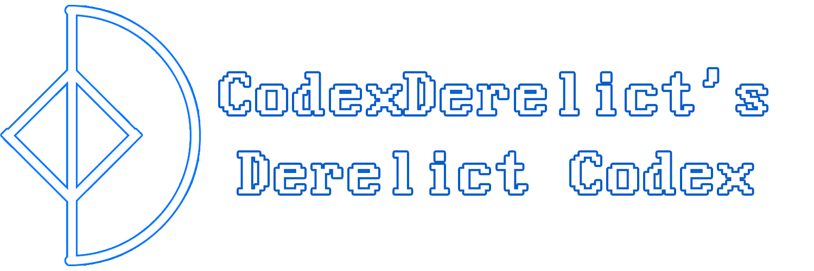

| Linguistics, Math, Computers & Stuff | Video Games, Music, Recreation & Stuff | Opinions, Thoughts, Neural Misfirings & Stuff | Goodies, Projects, Links & Stuff |
An Atom feed is now available!
My name is Omar. I'm a 22 year old from the Emirates with an interest in language, mathematics and technology and their intersection. I speak Arabic and English (natively), German (B2) and French (C1).
As a prospective computational linguist, my research interest falls in the niche between performance/corpus-compatible logical frameworks for linguistic analysis such as HPSG, LFG and categorial grammar and computational analyses in natural language processing, both in more traditional machine learning and data science as well as the more nascent advancements in deep learning, whose successes in natural language generation and comprehension have spurred great curiosity to their utility in linguistic analysis. Whether or not modern deep learning methods are suitable for large-scale modeling of the biological reality of human language processing, I believe that they have the potential to assist in the following ways:
The place of the aforementioned logical frameworks is to provide a rigorous, unified explanatory framework for linguistic analysis. Moreover, as word and sentence embeddings show some sort of an approximation of symbolic composition and generalization, such frameworks could allow for fine-grained, detailed analyses of these approximations, and conversely the continuous vector-based nature of word/sentence embeddings could allow for more fine-grained analysis that could assist in formulating more lexically oriented models of formal semantics.
Aside from computational linguistics, I like retro-gaming. I used to collect, though I don't as much. I own a modicum of retro game consoles and retro-computers, and would like to learn more about hardware and electronics towards the end of repairing, servicing and modifying the machines I do own as well as further understanding things like FPGAs. I like anime and manga as well, though it's an interest I maintain with less rigor. To pick four shows I find to have been masterpieces, I'd say: Space Battleship Yamato (1974), Madoka Magica, Steins;Gate and Kino's Journey (2003). In music, I mostly have a palate for heavy metal, progressive rock and video game music. In fact, it's video game music that gave me an appreciation for heavy metal and prog.
This site is a receptacle for all of my personal projects, both academic and not. I plan on putting up reports about projects of mine and update logs, writings about my interests, as well as opinion pieces on academia. My projects can all be found on my Github page, @codexderelict. My site is divided up into four subsections:
This is where I put up articles related to academia, including code reports, surveys of the landscape of computational linguistics research, and generally anything that relates to linguistics, mathematics and computation.
This is where I put up articles related to non-academic interests I have. These will mainly be reviews of games, shows, albums, et cetera.
This is where I put up more opinionated pieces on anything that comes to mind, academic or not; I don't find it to be right to group in what I know from what I think to be right, nor do I want to mix my own personal biases and thoughts with my more formal work.
This is where I put up any miscellanea that don't fit elsewhere.
The best way to reach me is my email, codexderelict@proton.me, or my Twitter, @codexderelict. I accept messages about anything, academic or not.
All of my software work, including the code for this website is licensed under the Unlicense, and my writings and all non-software work under Creative Commons Zero. In other words, all of my work is in the public domain. On the slim chance that someone decides to copy my work, and the slimmer chance someone attempts to retaliate on my behalf, just know that you are freely allowed to copy, modify, publish, use, compile, sell, or distribute it for any purpose, commercial or not, and can do with it literally ANYTHING you want. While I would not go after you if you don't, crediting me would be a nice gesture.